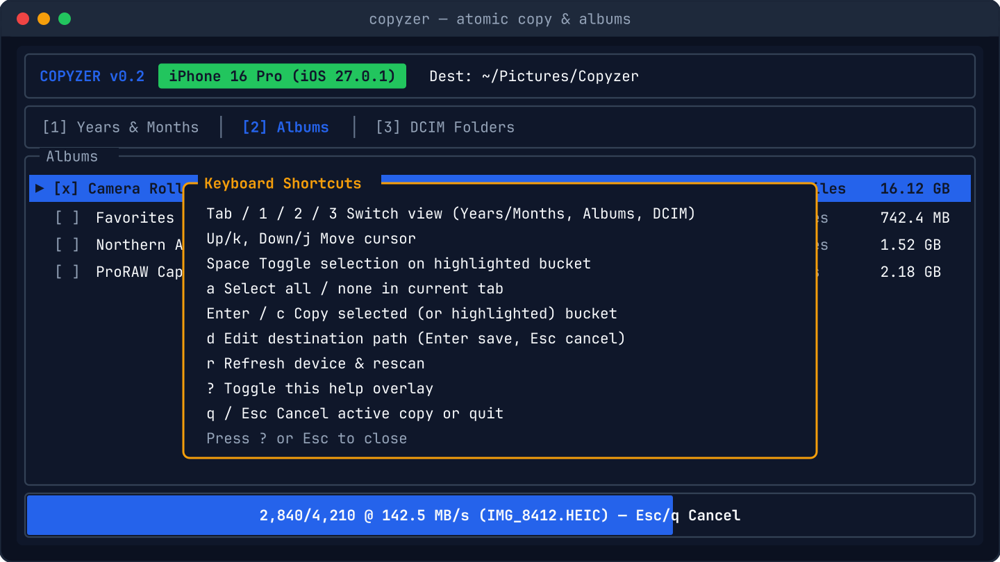

[SPEED]
1 MiB USB-C Copy Buffer
Streams over ifuse with a reusable 1 MiB buffer, live MB/s throughput gauge, and instant mid-file cancellation for multi-GB 4K videos.
Copyzer (English copy + Pashto zer, "fast") mounts your USB-C iPhone over ifuse, groups camera roll media by Year/Month, Albums, or DCIM folders, and copies originals atomically with a 1 MiB buffer.
curl -fsSL https://raw.githubusercontent.com/phaze7r/copyzer/main/install.sh | bash
Uses ifuse, libimobiledevice, and usbmuxd to mount your iPhone over USB-C in strict read-only mode.
sudo pacman -S ifuse libimobiledevice usbmuxd
git clone https://github.com/phaze7r/copyzer.git
cd copyzer/pkgbuild
makepkg -siZero GUI bloat, no silent overwrites, and no personal data leakage.
Streams over ifuse with a reusable 1 MiB buffer, live MB/s throughput gauge, and instant mid-file cancellation for multi-GB 4K videos.
Unlocks Years & Months and DCIM Folders immediately while Albums loads in the background via ?immutable=1 SQLite.
Writes to .copyzer.part, syncs, and renames atomically. Disambiguates IMG_9999 rollovers (IMG_0001_136APPLE.JPG) so photos are never overwritten.
Mounts inside user-only XDG_RUNTIME_DIR with 0700 permissions, reaps stale FUSE mounts, and hides local usernames & personal device names.
Reads ~/.local/state/omarchy/current/theme/colors.toml automatically with a high-contrast dark slate fallback.
Run copyzer doctor, copyzer scan --json, or copyzer copy --year 2026 in scripts and cron jobs.


~/Pictures/Copyzer)
# Launch interactive TUI
copyzer
# Verify usbmuxd, ifuse, and connected iPhone
copyzer doctor
# Output full camera roll index as JSON
copyzer scan --json
# Copy a specific year/month headlessly
copyzer copy --year 2026 --month 11We welcome pull requests, bug reports, and hardware testing from Linux & Rust developers.
Adaptive USB 2.0 handshake retries, iOS 12–15 Photos.sqlite adapters, and full model mapping back to iPhone 6s.
On-the-fly HEIC → JPEG and MOV → MP4 conversion during copy while keeping originals intact.
Found a bug or want to build a feature? Open an issue on GitHub with your copyzer doctor output.